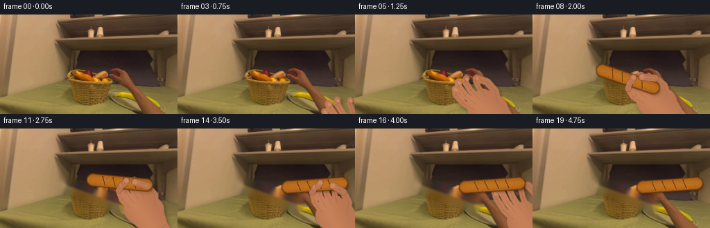
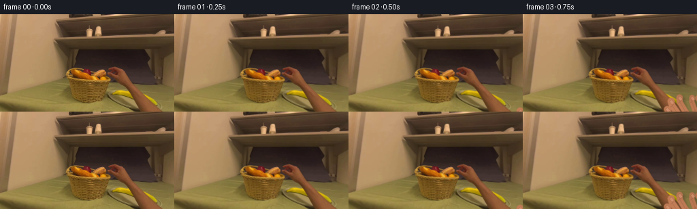
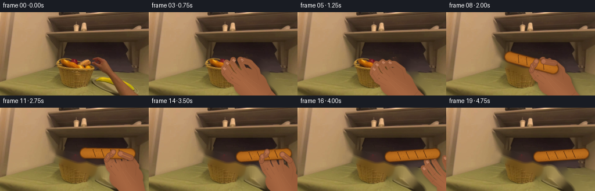
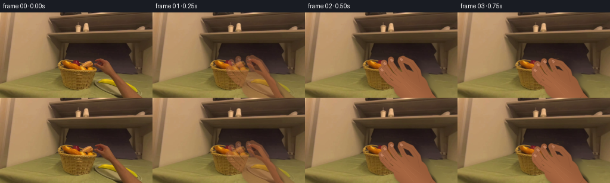

CODING AGENTS AS PIXEL WORLD MODELS
traex/GPT-5.6-Sol · common50_0018
点击播放 · 原生 RGB 像素
逐轮保存的候选
回放视频、检查图与代码变化。
每份候选均可单独播放。实际图片检查记录在下方工具轨迹中。
候选 01播放与检查图
点击播放 · 原生 RGB 像素


展开代码变化
--- 上一保存版本
+++ 本次保存版本
@@ -0,0 +1,293 @@
+from pathlib import Path
+import math
+import cv2
+import numpy as np
+from PIL import Image, ImageDraw, ImageFilter
+import artifact_io
+
+W, H, SS = 256, 144, 4
+ROOT = Path(__file__).resolve().parent
+SRC = np.asarray(Image.open(ROOT / "first_frame.png").convert("RGB"), dtype=np.uint8)
+rng = np.random.default_rng(18031)
+
+
+def ease(t):
+ t = float(np.clip(t, 0.0, 1.0))
+ return t*t*(3.0-2.0*t)
+
+
+def lerp(a, b, t):
+ return np.asarray(a, float)*(1-t) + np.asarray(b, float)*t
+
+
+def capsule_mask(size, center, length, width, angle):
+ """Anti-aliased rounded loaf/shadow mask at supersampled resolution."""
+ w, h = size
+ im = Image.new("L", (w*SS, h*SS), 0)
+ d = ImageDraw.Draw(im)
+ a = math.radians(angle)
+ u = np.array([math.cos(a), math.sin(a)])
+ p = np.array(center, float)
+ p0, p1 = p-u*length/2, p+u*length/2
+ d.line([tuple(p0*SS), tuple(p1*SS)], fill=255, width=max(1, round(width*SS)))
+ rr = width*SS/2
+ for q in (p0, p1):
+ x, y = q*SS
+ d.ellipse((x-rr, y-rr, x+rr, y+rr), fill=255)
+ return np.asarray(im, dtype=np.uint8)
+
+
+def alpha_over(base, layer, alpha):
+ a = alpha.astype(np.float32)[..., None] / 255.0
+ return np.clip(base.astype(np.float32)*(1-a) + layer.astype(np.float32)*a, 0, 255).astype(np.uint8)
+
+
+def composite_hi(base_hi, color_hi, mask_im):
+ mask = np.asarray(mask_im, dtype=np.float32)[..., None]/255.0
+ return np.clip(base_hi*(1-mask) + color_hi*mask, 0, 255)
+
+
+def path_points(points, palm, u):
+ # local +x points from wrist toward fingertips; local +y is clockwise/right side
+ v = np.array([-u[1], u[0]])
+ return [tuple((np.asarray(palm)+u*x+v*y)*SS) for x, y in points]
+
+
+def stroke_path(draw, pts, width, fill):
+ draw.line(pts, fill=fill, width=max(1, int(width*SS)), joint="curve")
+ rr = width*SS/2
+ for x, y in (pts[0], pts[-1]):
+ draw.ellipse((x-rr, y-rr, x+rr, y+rr), fill=fill)
+
+
+def hand_geometry(contact, u, closed):
+ # Palm sits behind the contact. Closed hand is a little nearer the held object.
+ reach = 51*(1-closed) + 44*closed
+ palm = np.asarray(contact, float) - np.asarray(u, float)*reach
+ open_paths = [
+ [(13,-15),(32,-19),(51,-19),(60,-16)],
+ [(17,-7),(39,-9),(59,-7),(65,-4)],
+ [(18,2),(39,2),(56,5),(61,9)],
+ [(14,11),(32,14),(45,19),(49,23)],
+ [(-5,16),(10,27),(28,32),(42,30)], # thumb
+ ]
+ closed_paths = [
+ [(12,-14),(30,-17),(44,-13),(48,-5)],
+ [(16,-6),(35,-7),(47,-2),(49,4)],
+ [(17,2),(34,4),(44,9),(43,14)],
+ [(13,10),(27,13),(35,17),(34,21)],
+ [(-6,15),(8,25),(25,24),(40,13)],
+ ]
+ paths=[]
+ for op, cp in zip(open_paths, closed_paths):
+ paths.append([tuple(lerp(a,b,closed)) for a,b in zip(op,cp)])
+ return palm, paths
+
+
+def hand_layers(frame_hi, contact, u, closed, opacity=1.0, foreground_only=False):
+ """Render a warm, shaded real-human right hand. Returns supersampled RGB."""
+ u = np.asarray(u, float); u /= np.linalg.norm(u)+1e-9
+ palm, paths = hand_geometry(contact, u, closed)
+ sh = (H*SS, W*SS)
+ mask = Image.new("L", (W*SS,H*SS),0)
+ dm = ImageDraw.Draw(mask)
+ # wrist and anatomical palm polygon
+ v = np.array([-u[1],u[0]])
+ poly_local=[(-59,-14),(-28,-20),(-8,-24),(15,-21),(28,-13),(30,4),(23,18),
+ (5,24),(-18,22),(-35,16),(-59,14)]
+ dm.polygon(path_points(poly_local,palm,u),fill=255)
+ # rounded heel/palm volume
+ pc=tuple(palm*SS); rr=(29*SS,23*SS)
+ dm.ellipse((pc[0]-rr[0],pc[1]-rr[1],pc[0]+rr[0],pc[1]+rr[1]),fill=255)
+ widths=[9.3,10.2,9.4,8.0,10.8]
+ for pts,wid in zip(paths,widths):
+ stroke_path(dm,path_points(pts,palm,u),wid,255)
+ # soften only edge, retaining a solid interior
+ mask=mask.filter(ImageFilter.GaussianBlur(0.45*SS))
+ if opacity<1:
+ mask=mask.point(lambda x:int(x*opacity))
+
+ if not foreground_only:
+ # soft contact shadow offset down/right
+ shadow=Image.new("L",(W*SS,H*SS),0)
+ shadow.paste(mask,(round(2.5*SS),round(3.0*SS)))
+ shadow=shadow.filter(ImageFilter.GaussianBlur(2.6*SS))
+ scol=np.zeros((H*SS,W*SS,3),np.float32); scol[:]=[35,21,15]
+ sm=np.asarray(shadow,np.float32)*0.39
+ frame_hi=composite_hi(frame_hi,scol,Image.fromarray(sm.astype(np.uint8)))
+
+ yy,xx=np.mgrid[0:H*SS,0:W*SS]/SS
+ relx=(xx-palm[0])*u[0]+(yy-palm[1])*u[1]
+ rely=(xx-palm[0])*v[0]+(yy-palm[1])*v[1]
+ # Directional and rounded-volume skin shading.
+ light=15*np.exp(-((rely+7)/16)**2)-0.16*np.maximum(relx-30,0)-0.12*np.maximum(-rely-16,0)
+ grain=cv2.GaussianBlur(rng.normal(0,2.0,sh).astype(np.float32),(0,0),0.8*SS)
+ col=np.empty((H*SS,W*SS,3),np.float32)
+ base=np.array([184,118,81],np.float32)
+ col[:]=base
+ col += light[...,None]*np.array([1.0,.72,.52])[None,None]
+ col += grain[...,None]*np.array([1.0,.65,.48])[None,None]
+ frame_hi=composite_hi(frame_hi,col,mask)
+
+ # Hand details: knuckle creases, finger side shade, and subtle nails.
+ det=Image.new("RGBA",(W*SS,H*SS),(0,0,0,0)); dd=ImageDraw.Draw(det)
+ for k,(pts,wid) in enumerate(zip(paths,widths)):
+ hp=path_points(pts,palm,u)
+ # side contour gives fingers cylindrical depth
+ dd.line(hp,fill=(112,62,45,42),width=max(1,int(0.75*SS)),joint="curve")
+ if k<4:
+ # two short joint creases
+ for frac in (0.43,0.68):
+ j=min(2,int(frac*3)); q=np.asarray(pts[j],float)
+ c=np.asarray(palm)+u*q[0]+v*q[1]
+ q1=c-v*(wid*.28); q2=c+v*(wid*.28)
+ dd.line([tuple(q1*SS),tuple(q2*SS)],fill=(105,55,43,68),width=max(1,int(.55*SS)))
+ # nails only on the four long fingers; warm, not painted
+ if k<4:
+ q=np.asarray(pts[-1],float); c=np.asarray(palm)+u*(q[0]-1.9)+v*q[1]
+ nu=u; nv=v
+ nail=[c+nu*3.1+nv*2.0,c+nu*3.1-nv*2.0,c-nu*2.2-nv*2.3,c-nu*3.0+nv*2.0]
+ dd.polygon([tuple(z*SS) for z in nail],fill=(224,160,128,125))
+ dd.line([tuple(z*SS) for z in nail+[nail[0]]],fill=(122,70,55,55),width=max(1,int(.4*SS)))
+ # three soft dorsal tendons and wrist crease
+ for off in (-9,0,9):
+ a=np.asarray(palm)+u*(-16)+v*off; b=np.asarray(palm)+u*(12)+v*(off*.6)
+ dd.line([tuple(a*SS),tuple(b*SS)],fill=(238,167,121,33),width=max(1,int(.8*SS)))
+ a=np.asarray(palm)+u*(-36)-v*13; b=np.asarray(palm)+u*(-36)+v*13
+ dd.line([tuple(a*SS),tuple(b*SS)],fill=(102,58,46,62),width=max(1,int(.7*SS)))
+ det=det.filter(ImageFilter.GaussianBlur(.18*SS))
+ rgba=np.asarray(det,np.float32)
+ frame_hi=frame_hi*(1-rgba[...,3:4]/255)+rgba[...,:3]*(rgba[...,3:4]/255)
+ return frame_hi, (palm,paths)
+
+
+def draw_gripping_fingers(frame_hi, contact, u, closed):
+ """Small terminal finger sections in front of loaf establish an actual grip."""
+ if closed < .35: return frame_hi
+ u=np.asarray(u,float);u/=np.linalg.norm(u)+1e-9
+ palm,paths=hand_geometry(contact,u,closed)
+ overlay=Image.new("RGBA",(W*SS,H*SS),(0,0,0,0)); d=ImageDraw.Draw(overlay)
+ # index, middle and opposing thumb tips wrap over the bread.
+ for k in (0,1,4):
+ pts=paths[k][-2:]
+ hp=path_points(pts,palm,u)
+ wid=[8.8,9.3,10.3][(0,1,4).index(k)]
+ stroke_path(d,hp,wid,(184,116,80,255))
+ # narrow highlight along light-facing side
+ d.line(hp,fill=(218,148,106,115),width=max(1,int(1.05*SS)))
+ x,y=hp[-1]; rr=wid*SS*.32
+ d.ellipse((x-rr,y-rr,x+rr,y+rr),fill=(205,136,101,235))
+ overlay=overlay.filter(ImageFilter.GaussianBlur(.25*SS))
+ a=np.asarray(overlay,np.float32); return frame_hi*(1-a[...,3:4]/255)+a[...,:3]*(a[...,3:4]/255)
+
+
+def draw_bread(frame_hi, center, angle, length=77, width=18, settled=False):
+ """Textured golden-brown long roll with scoring cuts and a soft cast shadow."""
+ center=np.asarray(center,float)
+ # shadow follows height; settled shadow is tighter
+ sm=capsule_mask((W,H),center+np.array([2.8,3.8]),length+1,width*.82,angle)
+ sim=Image.fromarray(sm).filter(ImageFilter.GaussianBlur((1.6 if settled else 2.5)*SS))
+ sc=np.zeros((H*SS,W*SS,3),np.float32);sc[:]=[35,21,10]
+ frame_hi=composite_hi(frame_hi,sc,Image.fromarray((np.asarray(sim)*(.34 if settled else .28)).astype(np.uint8)))
+ m=capsule_mask((W,H),center,length,width,angle)
+ mi=Image.fromarray(m).filter(ImageFilter.GaussianBlur(.25*SS)); ma=np.asarray(mi,np.float32)/255
+ yy,xx=np.mgrid[0:H*SS,0:W*SS]/SS
+ a=math.radians(angle); u=np.array([math.cos(a),math.sin(a)]); v=np.array([-u[1],u[0]])
+ qx=(xx-center[0])*u[0]+(yy-center[1])*u[1]
+ qy=(xx-center[0])*v[0]+(yy-center[1])*v[1]
+ crown=np.clip(1-(qy/(width*.54))**2,0,1)
+ ends=np.clip(1-(np.abs(qx)/(length*.58))**4,0,1)
+ texture=cv2.GaussianBlur(rng.normal(0,1,(H*SS,W*SS)).astype(np.float32),(0,0),.45*SS)
+ # golden center and toasted rim
+ light=22*crown+8*ends-14*(1-crown)
+ col=np.zeros((H*SS,W*SS,3),np.float32)
+ col[:]=[161,91,23]
+ col+=light[...,None]*np.array([1.0,.73,.25])[None,None]
+ col+=texture[...,None]*np.array([2.0,1.3,.5])[None,None]
+ frame_hi=composite_hi(frame_hi,col,mi)
+ # crisp toasted outline and diagonal artisan scoring
+ marks=Image.new("RGBA",(W*SS,H*SS),(0,0,0,0)); d=ImageDraw.Draw(marks)
+ p0=center-u*length/2; p1=center+u*length/2
+ d.line([tuple(p0*SS),tuple(p1*SS)],fill=(87,42,10,100),width=max(1,int(width*SS)),joint="curve")
+ # redraw inner body lightly so only rim remains (alpha compositing trick below uses outlines separately)
+ # use elliptical scoring strokes at four positions
+ for f in (-.29,-.10,.10,.29):
+ c=center+u*(f*length)
+ s0=c-v*(width*.40)-u*3.0; s1=c+v*(width*.36)+u*2.0
+ d.line([tuple(s0*SS),tuple(s1*SS)],fill=(102,47,9,185),width=max(1,int(2.0*SS)))
+ h0=s0+u*.8+v*.8; h1=s1+u*.8+v*.8
+ d.line([tuple(h0*SS),tuple(h1*SS)],fill=(232,163,69,155),width=max(1,int(.75*SS)))
+ # dark edge by mask morphology, rather than keeping broad line above
+ # Remove the broad centerline mark; rebuild edge independently.
+ edge=cv2.morphologyEx(m,cv2.MORPH_GRADIENT,np.ones((max(3,SS*2+1),)*2,np.uint8))
+ edgecol=np.zeros((H*SS,W*SS,4),np.uint8); edgecol[...,:3]=[91,45,11];edgecol[...,3]=(edge*.52).astype(np.uint8)
+ marks=Image.fromarray(edgecol,"RGBA"); d=ImageDraw.Draw(marks)
+ for f in (-.29,-.10,.10,.29):
+ c=center+u*(f*length); s0=c-v*(width*.38)-u*3; s1=c+v*(width*.35)+u*2
+ d.line([tuple(s0*SS),tuple(s1*SS)],fill=(91,42,8,205),width=max(1,int(1.9*SS)))
+ d.line([tuple((s0+u*.9+v*1.1)*SS),tuple((s1+u*.9+v*1.1)*SS)],fill=(236,171,77,145),width=max(1,int(.7*SS)))
+ # deterministic toasted freckles
+ for j in range(28):
+ q=(j*37%97)/96-.5; z=(j*53%89)/88-.5
+ if abs(q)<.47 and abs(z)<.42:
+ p=center+u*(q*length)+v*(z*width)
+ rr=(.22+(j%4)*.10)*SS
+ d.ellipse((p[0]*SS-rr,p[1]*SS-rr,p[0]*SS+rr,p[1]*SS+rr),fill=(86,41,9,80))
+ marks=marks.filter(ImageFilter.GaussianBlur(.12*SS))
+ ar=np.asarray(marks,np.float32); frame_hi=frame_hi*(1-ar[...,3:4]/255)+ar[...,:3]*(ar[...,3:4]/255)
+ return frame_hi
+
+
+# Reconstruct only the original loaf footprint for frames after it is lifted.
+loaf_start=np.array([134.0,96.0]); loaf_target=np.array([198.0,82.0])
+remove=capsule_mask((W,H),loaf_start,81,21,20)
+remove_small=np.asarray(Image.fromarray(remove).resize((W,H),Image.Resampling.LANCZOS))
+remove_small=cv2.dilate((remove_small>30).astype(np.uint8),np.ones((3,3),np.uint8),iterations=1)*255
+RGB_INPAINT=cv2.inpaint(SRC,remove_small,4,cv2.INPAINT_TELEA)
+
+frames=[]
+for i in range(20):
+ if i==0:
+ frames.append(SRC.copy()); continue
+
+ # The original image is preserved during the reach. Once gripped, use a local reconstruction.
+ bg=SRC.copy() if i<7 else RGB_INPAINT.copy()
+ hi=np.asarray(Image.fromarray(bg).resize((W*SS,H*SS),Image.Resampling.BICUBIC),np.float32)
+
+ # Hand/finger state and fingertip contact path.
+ if i<=6:
+ t=ease((i-1)/5)
+ contact=lerp((278,158),(142,98),t)
+ u=lerp((-.58,-.81),(-.76,-.65),t); u/=np.linalg.norm(u)
+ closed=ease((i-4)/2)
+ hi,_=hand_layers(hi,contact,u,closed)
+ else:
+ if i<=14:
+ t=ease((i-7)/7)
+ # Lift first, then glide and lower onto the plate.
+ center=lerp(loaf_start,loaf_target,t)
+ center[1]-=10*math.sin(math.pi*t)
+ angle=20*(1-t)-4*t
+ closed=1.0 if i<=13 else .78
+ contact=center+np.array([9.0,4.0])
+ u=lerp((-.76,-.65),(-.46,-.89),t);u/=np.linalg.norm(u)
+ else:
+ center=loaf_target.copy(); angle=-4
+ q=ease((i-15)/4)
+ contact=lerp(loaf_target+np.array([10,3]),(284,128),q)
+ u=lerp((-.46,-.89),(-.94,-.34),q);u/=np.linalg.norm(u)
+ closed=max(0,1-ease((i-14)/2))
+ # Bread shadow goes below the hand; palm behind bread; fingertips in front.
+ # Render hand (including its shadow), then loaf and gripping digits.
+ hi,geom=hand_layers(hi,contact,u,closed)
+ hi=draw_bread(hi,center,angle,settled=(i>=14))
+ if i<=15:
+ hi=draw_gripping_fingers(hi,contact,u,closed)
+
+ out=np.asarray(Image.fromarray(np.clip(hi,0,255).astype(np.uint8)).resize((W,H),Image.Resampling.LANCZOS),dtype=np.uint8)
+ # Mild exposure continuity; no random camera jitter, so the action remains easy to follow.
+ frames.append(out)
+
+frames=np.stack(frames).astype(np.uint8)
+assert np.array_equal(frames[0],SRC)
+artifact_io.save(frames,ROOT)
候选 02播放与检查图
点击播放 · 原生 RGB 像素


展开代码变化
--- 上一保存版本
+++ 本次保存版本
@@ -123,7 +123,8 @@
light=15*np.exp(-((rely+7)/16)**2)-0.16*np.maximum(relx-30,0)-0.12*np.maximum(-rely-16,0)
grain=cv2.GaussianBlur(rng.normal(0,2.0,sh).astype(np.float32),(0,0),0.8*SS)
col=np.empty((H*SS,W*SS,3),np.float32)
- base=np.array([184,118,81],np.float32)
+ # Match the warm medium-brown hand already present in the source photograph.
+ base=np.array([151,91,57],np.float32)
col[:]=base
col += light[...,None]*np.array([1.0,.72,.52])[None,None]
col += grain[...,None]*np.array([1.0,.65,.48])[None,None]
@@ -172,11 +173,11 @@
pts=paths[k][-2:]
hp=path_points(pts,palm,u)
wid=[8.8,9.3,10.3][(0,1,4).index(k)]
- stroke_path(d,hp,wid,(184,116,80,255))
+ stroke_path(d,hp,wid,(151,89,57,255))
# narrow highlight along light-facing side
- d.line(hp,fill=(218,148,106,115),width=max(1,int(1.05*SS)))
+ d.line(hp,fill=(204,132,91,115),width=max(1,int(1.05*SS)))
x,y=hp[-1]; rr=wid*SS*.32
- d.ellipse((x-rr,y-rr,x+rr,y+rr),fill=(205,136,101,235))
+ d.ellipse((x-rr,y-rr,x+rr,y+rr),fill=(180,112,80,235))
overlay=overlay.filter(ImageFilter.GaussianBlur(.25*SS))
a=np.asarray(overlay,np.float32); return frame_hi*(1-a[...,3:4]/255)+a[...,:3]*(a[...,3:4]/255)
@@ -243,49 +244,71 @@
remove=capsule_mask((W,H),loaf_start,81,21,20)
remove_small=np.asarray(Image.fromarray(remove).resize((W,H),Image.Resampling.LANCZOS))
remove_small=cv2.dilate((remove_small>30).astype(np.uint8),np.ones((3,3),np.uint8),iterations=1)*255
-RGB_INPAINT=cv2.inpaint(SRC,remove_small,4,cv2.INPAINT_TELEA)
+# The source already shows the right hand/forearm entering from the lower right.
+# Remove it geometrically so subsequent poses continue that hand instead of
+# drawing an implausible duplicate. The mask follows the bent wrist, palm,
+# four fingers and thumb visible over the plate/basket.
+hand_remove=np.zeros((H,W),np.uint8)
+cv2.line(hand_remove,(232,151),(190,108),255,26,cv2.LINE_AA)
+cv2.ellipse(hand_remove,(181,99),(25,19),25,0,360,255,-1,cv2.LINE_AA)
+for a,b,wid in [((179,94),(143,78),9),((180,98),(139,86),9),
+ ((180,102),(141,95),9),((181,106),(150,104),8),
+ ((184,108),(162,118),10)]:
+ cv2.line(hand_remove,a,b,255,wid,cv2.LINE_AA)
+hand_remove=cv2.dilate(hand_remove,np.ones((3,3),np.uint8),iterations=1)
+HAND_INPAINT=cv2.inpaint(SRC,hand_remove,5,cv2.INPAINT_TELEA)
+both=cv2.max(hand_remove,remove_small)
+RGB_INPAINT=cv2.inpaint(SRC,both,5,cv2.INPAINT_TELEA)
frames=[]
for i in range(20):
if i==0:
frames.append(SRC.copy()); continue
- # The original image is preserved during the reach. Once gripped, use a local reconstruction.
- bg=SRC.copy() if i<7 else RGB_INPAINT.copy()
+ # Keep the original bread during the grasp, but reconstruct the original
+ # hand. Once the roll lifts, reconstruct both vacated silhouettes.
+ bg=HAND_INPAINT.copy() if i<6 else RGB_INPAINT.copy()
hi=np.asarray(Image.fromarray(bg).resize((W*SS,H*SS),Image.Resampling.BICUBIC),np.float32)
# Hand/finger state and fingertip contact path.
- if i<=6:
- t=ease((i-1)/5)
- contact=lerp((278,158),(142,98),t)
- u=lerp((-.58,-.81),(-.76,-.65),t); u/=np.linalg.norm(u)
- closed=ease((i-4)/2)
+ if i<=5:
+ # Continue from the already-visible first-frame hand: settle the
+ # fingertips around the roll, then curl into a firm precision grip.
+ t=ease((i-1)/4)
+ contact=lerp((143,91),(137,96),t)
+ u=lerp((-.72,-.69),(-.77,-.64),t); u/=np.linalg.norm(u)
+ closed=.18+.82*t
hi,_=hand_layers(hi,contact,u,closed)
else:
- if i<=14:
- t=ease((i-7)/7)
+ if i<=13:
+ t=ease((i-6)/7)
# Lift first, then glide and lower onto the plate.
center=lerp(loaf_start,loaf_target,t)
center[1]-=10*math.sin(math.pi*t)
angle=20*(1-t)-4*t
- closed=1.0 if i<=13 else .78
+ closed=1.0
contact=center+np.array([9.0,4.0])
u=lerp((-.76,-.65),(-.46,-.89),t);u/=np.linalg.norm(u)
else:
center=loaf_target.copy(); angle=-4
- q=ease((i-15)/4)
+ q=ease((i-14)/5)
contact=lerp(loaf_target+np.array([10,3]),(284,128),q)
u=lerp((-.46,-.89),(-.94,-.34),q);u/=np.linalg.norm(u)
- closed=max(0,1-ease((i-14)/2))
+ closed=max(0,1-ease((i-13)/2))
# Bread shadow goes below the hand; palm behind bread; fingertips in front.
# Render hand (including its shadow), then loaf and gripping digits.
hi,geom=hand_layers(hi,contact,u,closed)
hi=draw_bread(hi,center,angle,settled=(i>=14))
- if i<=15:
+ if i<=14:
hi=draw_gripping_fingers(hi,contact,u,closed)
out=np.asarray(Image.fromarray(np.clip(hi,0,255).astype(np.uint8)).resize((W,H),Image.Resampling.LANCZOS),dtype=np.uint8)
# Mild exposure continuity; no random camera jitter, so the action remains easy to follow.
+ # A two-frame dissolve makes the exact photographic first frame flow into
+ # its clean articulated reconstruction without a one-frame edge pop.
+ if i<=2:
+ mix=[0,.55,1.0][i]
+ out=np.clip(SRC.astype(np.float32)*(1-mix)+out.astype(np.float32)*mix,0,255).astype(np.uint8)
frames.append(out)
frames=np.stack(frames).astype(np.uint8)
可观测工具轨迹
实际执行的命令与返回图片。
命令 1exit 0
/bin/bash -lc "cat GENERATION_RULES.md && printf '\\n---PROMPT---\\n' && cat prompt.txt"
命令 2exit 0
/bin/bash -lc "find . -maxdepth 2 -type f -printf '%p %s bytes\\n' | sort && printf '\\nTools:\\n' && command -v ffmpeg && command -v python3 && command -v convert || true"
命令 3exit 0
/bin/bash -lc "cat task_spec.json && sed -n '1,240p' artifact_io.py"
命令 4exit 0
/bin/bash -lc "python3 - <<'PY'
from PIL import Image
import numpy as np
im=np.array(Image.open('first_frame.png').convert('RGB'))
print(im.shape, im.dtype, im.min(axis=(0,1)), im.max(axis=(0,1)), im.mean(axis=(0,1)))
# coarse 16x9 block average RGB and luminance
for by in range(9):
row=[]
for bx in range(16):
a=im[by*16:(by+1)*16,bx*16:(bx+1)*16].mean((0,1)).astype(int)
row.append('%02x%02x%02x'%tuple(a))
print(' '.join(row))
PY"命令 5exit 0
/bin/bash -lc "python3 - <<'PY'
from PIL import Image
import numpy as np
im=np.array(Image.open('first_frame.png').convert('RGB'))
# ANSI truecolor block mosaic 64x36, each cell nearest average color, two spaces
for y in range(0,144,4):
s=''
for x in range(0,256,4):
c=im[y:y+4,x:x+4].mean((0,1)).astype(int)
s+=f'\\x1b[48;2;{c[0]};{c[1]};{c[2]}m '
print(s+'\\x1b[0m')
PY"命令 6exit 0
/bin/bash -lc "python3 - <<'PY' mods=['cv2','scipy','sklearn','imageio','matplotlib'] for m in mods: try: x=__import__(m); print(m,'yes',getattr(x,'__version__','')) except Exception as e: print(m,'no') PY"
命令 7exit 2
/bin/bash -lc "cat > /tmp/analyze.py <<'PY'
import cv2, numpy as np
from PIL import Image
im=np.array(Image.open('first_frame.png').convert('RGB')); h,w=im.shape[:2]
r,g,b=[im[:,:,i] for i in range(3)]
hsv=cv2.cvtColor(im,cv2.COLOR_RGB2HSV); H,S,V=cv2.split(hsv)
masks={
'orange':(r.astype(int)>g.astype(int)*1.35)&(g.astype(int)>b.astype(int)*1.25)&(r>80),
'gold':(r>100)&(g>65)&(b<65)&(S>100),
'red':(r>70)&(r.astype(int)>g.astype(int)*1.6)&(r.astype(int)>b.astype(int)*1.4),
'gray_dark':(V<100)&(S<80),
'gray':(S<65)&(V<160),
'yellow':(H>15)&(H<38)&(S>100)&(V>90),
}
for name,m in masks.items():
n,lab,st,cent=cv2.connectedComponentsWithStats(m.astype('uint8'),8)
print('\\n',name,'total',m.sum())
inds=np.argsort(st[1:,4])[::-1][:15]+1
for i in inds:
x,y,ww,hh,a=st[i];
if a<4: continue
print(a,(x,y,ww,hh),tuple(np.round(cent[i],1)),tuple(np.round(im[lab==i].mean(0),1)))
# Detailed 8x8 character map classes
# priority O orange, Y yellow, D dark gray, G low saturation gray, L light beige, . brown
for yy in range(0,h,4):
s=''
for xx in range(0,w,4):
a=im[yy:yy+4,xx:xx+4]; rr,gg,bb=a.mean((0,1));
hs=hsv[yy:yy+4,xx:xx+4]; HH,SS,VV=hs.mean((0,1))
if rr>gg*1.4 and gg>bb*1.2 and rr>90: c='O'
elif HH>15 and HH<38 and SS>100 and VV>90: c='Y'
elif VV<80 and SS<85:c='#'
elif SS<65 and VV<150:c='G'
elif rr>155 and gg>120 and bb>85:c='L'
elif gg>rr*.78 and gg>bb*1.35:c='v'
elif rr>100:c=':'
else:c='.'
s+=c
print(f'{yy:03} '+s)
PY
python3 /tmp/analyze.py"命令 8exit 0
/bin/bash -lc "cat > .tmp/analyze.py <<'PY'
import cv2, numpy as np
from PIL import Image
im=np.array(Image.open('first_frame.png').convert('RGB')); h,w=im.shape[:2]
r,g,b=[im[:,:,i] for i in range(3)]
hsv=cv2.cvtColor(im,cv2.COLOR_RGB2HSV); H,S,V=cv2.split(hsv)
masks={
'orange':(r.astype(int)>g.astype(int)*1.35)&(g.astype(int)>b.astype(int)*1.25)&(r>80),
'gold':(r>100)&(g>65)&(b<65)&(S>100),
'red':(r>70)&(r.astype(int)>g.astype(int)*1.6)&(r.astype(int)>b.astype(int)*1.4),
'gray_dark':(V<100)&(S<80),
'gray':(S<65)&(V<160),
'yellow':(H>15)&(H<38)&(S>100)&(V>90),
}
for name,m in masks.items():
n,lab,st,cent=cv2.connectedComponentsWithStats(m.astype('uint8'),8)
print('\\n',name,'total',m.sum())
inds=np.argsort(st[1:,4])[::-1][:15]+1
for i in inds:
x,y,ww,hh,a=st[i];
if a<4: continue
print(a,(x,y,ww,hh),tuple(np.round(cent[i],1)),tuple(np.round(im[lab==i].mean(0),1)))
for yy in range(0,h,4):
s=''
for xx in range(0,w,4):
a=im[yy:yy+4,xx:xx+4]; rr,gg,bb=a.mean((0,1));
hs=hsv[yy:yy+4,xx:xx+4]; HH,SS,VV=hs.mean((0,1))
if rr>gg*1.4 and gg>bb*1.2 and rr>90: c='O'
elif HH>15 and HH<38 and SS>100 and VV>90: c='Y'
elif VV<80 and SS<85:c='#'
elif SS<65 and VV<150:c='G'
elif rr>155 and gg>120 and bb>85:c='L'
elif gg>rr*.78 and gg>bb*1.35:c='v'
elif rr>100:c=':'
else:c='.'
s+=c
print(f'{yy:03} '+s)
PY
python3 .tmp/analyze.py"命令 9exit 0
/bin/bash -lc "python3 - <<'PY'
from PIL import Image
import cv2,numpy as np
im=np.array(Image.open('first_frame.png').convert('RGB'))
hsv=cv2.cvtColor(im,cv2.COLOR_RGB2HSV)
# 2x2 avg then HSV conversion
for y in range(54,142,2):
s=''
for x in range(88,250,2):
rgb=im[y:y+2,x:x+2].mean((0,1)).astype('uint8')
h,sa,v=cv2.cvtColor(rgb[None,None],cv2.COLOR_RGB2HSV)[0,0]
r,g,b=rgb
if v<65 and sa<90:c='#' # plate
elif v<80:c='d'
elif sa<45:c='g'
elif h<7 and sa>100:c='R'
elif h<14 and sa>110 and v>100:c='O'
elif h<22 and sa>100 and v>95:c='y'
elif h<34 and sa>95 and v>90:c='Y'
elif h<45 and sa>90:c='V'
elif v>150 and sa<120:c='L'
elif v>120:c=':'
else:c='.'
s+=c
print(f'{y:03} {s}')
PY"命令 10exit 0
/bin/bash -lc "python3 - <<'PY'
import cv2,numpy as np
from PIL import Image
im=np.array(Image.open('first_frame.png'))
g=cv2.cvtColor(im,cv2.COLOR_RGB2GRAY)
e=cv2.Canny(g,25,70)
# crop relevant x80:250 y45:144, 2x2 max; chars based edge count
for y in range(44,144,2):
s=''
for x in range(76,252,2):
n=e[y:y+2,x:x+2].sum()//255
s += ' ' if n==0 else ('.' if n==1 else ('+' if n==2 else ('#' if n==3 else '@')))
print(f'{y:03}â{s}â')
PY"命令 11exit 0
/bin/bash -lc "python3 - <<'PY'
from PIL import Image
import cv2,numpy as np
im=np.array(Image.open('first_frame.png').convert('RGB')); hsv=cv2.cvtColor(im,cv2.COLOR_RGB2HSV);H,S,V=cv2.split(hsv)
r,g,b=im.transpose(2,0,1)
for name,m in [('darkplate',(V<105)&(S<90)&(np.indices(V.shape)[1]>130)),('red',(r.astype(int)>g.astype(int)*1.6)&(r.astype(int)>b.astype(int)*1.4)&(r>70)),('orange',(r.astype(int)>g.astype(int)*1.35)&(g.astype(int)>b.astype(int)*1.25)&(r>80))]:
print('\\n'+name)
for y in range(50,144,2):
row=m[y:y+2].any(0); ids=np.flatnonzero(row)
runs=[]
if len(ids):
bd=np.r_[0,np.where(np.diff(ids)>1)[0]+1,len(ids)]
runs=[(int(ids[a]),int(ids[z-1])) for a,z in zip(bd[:-1],bd[1:]) if ids[z-1]-ids[a]>=2]
if runs: print(y,runs)
PY"命令 12exit 0
/bin/bash -lc "python3 - <<'PY'
import cv2,numpy as np
from PIL import Image
im=np.array(Image.open('first_frame.png')); g=cv2.cvtColor(im,cv2.COLOR_RGB2GRAY); g=cv2.GaussianBlur(g,(3,3),0)
for t in [(10,30),(20,50),(30,80)]:
e=cv2.Canny(g,*t)
cs,_=cv2.findContours(e,cv2.RETR_LIST,cv2.CHAIN_APPROX_SIMPLE)
print('\\n',t)
for c in sorted(cs,key=cv2.contourArea,reverse=True)[:30]:
x,y,w,h=cv2.boundingRect(c); a=cv2.contourArea(c); p=cv2.arcLength(c,False)
if y>35: print(round(a),round(p),(x,y,w,h))
print('Hough lines')
e=cv2.Canny(g,15,45); ls=cv2.HoughLinesP(e,1,np.pi/180,25,minLineLength=20,maxLineGap=5)
for l in sorted(ls[:,0].tolist(), key=lambda q:-((q[2]-q[0])**2+(q[3]-q[1])**2))[:30]: print(l)
PY"命令 13exit 1
/bin/bash -lc "cat > generate.py <<'PY'
from pathlib import Path
import math
import cv2
import numpy as np
from PIL import Image, ImageDraw, ImageFilter
import artifact_io
W, H, SS = 256, 144, 4
ROOT = Path(__file__).resolve().parent
SRC = np.asarray(Image.open(ROOT / \"first_frame.png\").convert(\"RGB\"), dtype=np.uint8)
rng = np.random.default_rng(18031)
def ease(t):
t = float(np.clip(t, 0.0, 1.0))
return t*t*(3.0-2.0*t)
def lerp(a, b, t):
return np.asarray(a, float)*(1-t) + np.asarray(b, float)*t
def capsule_mask(size, center, length, width, angle):
\"\"\"Anti-aliased rounded loaf/shadow mask at supersampled resolution.\"\"\"
w, h = size
im = Image.new(\"L\", (w*SS, h*SS), 0)
d = ImageDraw.Draw(im)
a = math.radians(angle)
u = np.array([math.cos(a), math.sin(a)])
p = np.array(center, float)
p0, p1 = p-u*length/2, p+u*length/2
d.line([tuple(p0*SS), tuple(p1*SS)], fill=255, width=max(1, round(width*SS)))
rr = width*SS/2
for q in (p0, p1):
x, y = q*SS
d.ellipse((x-rr, y-rr, x+rr, y+rr), fill=255)
return np.asarray(im, dtype=np.uint8)
def alpha_over(base, layer, alpha):
a = alpha.astype(np.float32)[..., None] / 255.0
return np.clip(base.astype(np.float32)*(1-a) + layer.astype(np.float32)*a, 0, 255).astype(np.uint8)
def composite_hi(base_hi, color_hi, mask_im):
mask = np.asarray(mask_im, dtype=np.float32)[..., None]/255.0
return np.clip(base_hi*(1-mask) + color_hi*mask, 0, 255)
def path_points(points, palm, u):
# local +x points from wrist toward fingertips; local +y is clockwise/right side
v = np.array([-u[1], u[0]])
return [tuple((np.asarray(palm)+u*x+v*y)*SS) for x, y in points]
def stroke_path(draw, pts, width, fill):
draw.line(pts, fill=fill, width=max(1, int(width*SS)), joint=\"curve\")
rr = width*SS/2
for x, y in (pts[0], pts[-1]):
draw.ellipse((x-rr, y-rr, x+rr, y+rr), fill=fill)
def hand_geometry(contact, u, closed):
# Palm sits behind the contact. Closed hand is a little nearer the held object.
reach = 51*(1-closed) + 44*closed
palm = np.asarray(contact, float) - np.asarray(u, float)*reach
open_paths = [
[(13,-15),(32,-19),(51,-19),(60,-16)],
[(17,-7),(39,-9),(59,-7),(65,-4)],
[(18,2),(39,2),(56,5),(61,9)],
[(14,11),(32,14),(45,19),(49,23)],
[(-5,16),(10,27),(28,32),(42,30)], # thumb
]
closed_paths = [
[(12,-14),(30,-17),(44,-13),(48,-5)],
[(16,-6),(35,-7),(47,-2),(49,4)],
[(17,2),(34,4),(44,9),(43,14)],
[(13,10),(27,13),(35,17),(34,21)],
[(-6,15),(8,25),(25,24),(40,13)],
]
paths=[]
for op, cp in zip(open_paths, closed_paths):
paths.append([tuple(lerp(a,b,closed)) for a,b in zip(op,cp)])
return palm, paths
def hand_layers(frame_hi, contact, u, closed, opacity=1.0, foreground_only=False):
\"\"\"Render a warm, shaded real-human right hand. Returns supersampled RGB.\"\"\"
u = np.asarray(u, float); u /= np.linalg.norm(u)+1e-9
palm, paths = hand_geometry(contact, u, closed)
sh = (H*SS, W*SS)
mask = Image.new(\"L\", (W*SS,H*SS),0)
dm = ImageDraw.Draw(mask)
# wrist and anatomical palm polygon
v = np.array([-u[1],u[0]])
poly_local=[(-59,-14),(-28,-20),(-8,-24),(15,-21),(28,-13),(30,4),(23,18),
(5,24),(-18,22),(-35,16),(-59,14)]
dm.polygon(path_points(poly_local,palm,u),fill=255)
# rounded heel/palm volume
pc=tuple(palm*SS); rr=(29*SS,23*SS)
dm.ellipse((pc[0]-rr[0],pc[1]-rr[1],pc[0]+rr[0],pc[1]+rr[1]),fill=255)
widths=[9.3,10.2,9.4,8.0,10.8]
for pts,wid in zip(paths,widths):
stroke_path(dm,path_points(pts,palm,u),wid,255)
# soften only edge, retaining a solid interior
mask=mask.filter(ImageFilter.GaussianBlur(0.45*SS))
if opacity<1:
mask=mask.point(lambda x:int(x*opacity))
if not foreground_only:
# soft contact shadow offset down/right
shadow=Image.new(\"L\",(W*SS,H*SS),0)
shadow.paste(mask,(round(2.5*SS),round(3.0*SS)))
shadow=shadow.filter(ImageFilter.GaussianBlur(2.6*SS))
scol=np.zeros((H*SS,W*SS,3),np.float32); scol[:]=[35,21,15]
sm=np.asarray(shadow,np.float32)*0.39
frame_hi=composite_hi(frame_hi,scol,Image.fromarray(sm.astype(np.uint8)))
yy,xx=np.mgrid[0:H*SS,0:W*SS]/SS
relx=(xx-palm[0])*u[0]+(yy-palm[1])*u[1]
rely=(xx-palm[0])*v[0]+(yy-palm[1])*v[1]
# Directional and rounded-volume skin shading.
light=15*np.exp(-((rely+7)/16)**2)-0.16*np.maximum(relx-30,0)-0.12*np.maximum(-rely-16,0)
grain=cv2.GaussianBlur(rng.normal(0,2.0,sh).astype(np.float32),(0,0),0.8*SS)
col=np.empty((H*SS,W*SS,3),np.float32)
base=np.array([184,118,81],np.float32)
col[:]=base
col += light[...,None]*np.array([1.0,.72,.52])[None,None]
col += grain[...,None]*np.array([1.0,.65,.48])[None,None]
frame_hi=composite_hi(frame_hi,col,mask)
# Hand details: knuckle creases, finger side shade, and subtle nails.
det=Image.new(\"RGBA\",(W*SS,H*SS),(0,0,0,0)); dd=ImageDraw.Draw(det)
for k,(pts,wid) in enumerate(zip(paths,widths)):
hp=path_points(pts,palm,u)
# side contour gives fingers cylindrical depth
dd.line(hp,fill=(112,62,45,42),width=max(1,int(0.75*SS)),joint=\"curve\")
if k<4:
# two short joint creases
for frac in (0.43,0.68):
j=min(2,int(frac*3)); q=np.asarray(pts[j],float)
c=np.asarray(palm)+u*q[0]+v*q[1]
q1=c-v*(wid*.28); q2=c+v*(wid*.28)
dd.line([tuple(q1*SS),tuple(q2*SS)],fill=(105,55,43,68),width=max(1,int(.55*SS)))
# nails only on the four long fingers; warm, not painted
if k<4:
q=np.asarray(pts[-1],float); c=np.asarray(palm)+u*(q[0]-1.9)+v*q[1]
nu=u; nv=v
nail=[c+nu*3.1+nv*2.0,c+nu*3.1-nv*2.0,c-nu*2.2-nv*2.3,c-nu*3.0+nv*2.0]
dd.polygon([tuple(z*SS) for z in nail],fill=(224,160,128,125))
dd.line([tuple(z*SS) for z in nail+[nail[0]]],fill=(122,70,55,55),width=max(1,int(.4*SS)))
# three soft dorsal tendons and wrist crease
for off in (-9,0,9):
a=np.asarray(palm)+u*(-16)+v*off; b=np.asarray(palm)+u*(12)+v*(off*.6)
dd.line([tuple(a*SS),tuple(b*SS)],fill=(238,167,121,33),width=max(1,int(.8*SS)))
a=np.asarray(palm)+u*(-36)-v*13; b=np.asarray(palm)+u*(-36)+v*13
dd.line([tuple(a*SS),tuple(b*SS)],fill=(102,58,46,62),width=max(1,int(.7*SS)))
det=det.filter(ImageFilter.GaussianBlur(.18*SS))
rgba=np.asarray(det,np.float32)
frame_hi=frame_hi*(1-rgba[...,3:4]/255)+rgba[...,:3]*(rgba[...,3:4]/255)
return frame_hi, (palm,paths)
def draw_gripping_fingers(frame_hi, contact, u, closed):
\"\"\"Small terminal finger sections in front of loaf establish an actual grip.\"\"\"
if closed < .35: return frame_hi
u=np.asarray(u,float);u/=np.linalg.norm(u)+1e-9
palm,paths=hand_geometry(contact,u,closed)
overlay=Image.new(\"RGBA\",(W*SS,H*SS),(0,0,0,0)); d=ImageDraw.Draw(overlay)
# index, middle and opposing thumb tips wrap over the bread.
for k in (0,1,4):
pts=paths[k][-2:]
hp=path_points(pts,palm,u)
wid=[8.8,9.3,10.3][(0,1,4).index(k)]
stroke_path(d,hp,wid,(184,116,80,255))
# narrow highlight along light-facing side
d.line(hp,fill=(218,148,106,115),width=max(1,int(1.05*SS)))
x,y=hp[-1]; rr=wid*SS*.32
d.ellipse((x-rr,y-rr,x+rr,y+rr),fill=(205,136,101,235))
overlay=overlay.filter(ImageFilter.GaussianBlur(.25*SS))
a=np.asarray(overlay,np.float32); return frame_hi*(1-a[...,3:4]/255)+a[...,:3]*(a[...,3:4]/255)
def draw_bread(frame_hi, center, angle, length=77, width=18, settled=False):
\"\"\"Textured golden-brown long roll with scoring cuts and a soft cast shadow.\"\"\"
center=np.asarray(center,float)
# shadow follows height; settled shadow is tighter
sm=capsule_mask((W,H),center+np.array([2.8,3.8]),length+1,width*.82,angle)
sim=Image.fromarray(sm).filter(ImageFilter.GaussianBlur((1.6 if settled else 2.5)*SS))
sc=np.zeros((H*SS,W*SS,3),np.float32);sc[:]=[35,21,10]
frame_hi=composite_hi(frame_hi,sc,Image.fromarray((np.asarray(sim)*(.34 if settled else .28)).astype(np.uint8)))
m=capsule_mask((W,H),center,length,width,angle)
mi=Image.fromarray(m).filter(ImageFilter.GaussianBlur(.25*SS)); ma=np.asarray(mi,np.float32)/255
yy,xx=np.mgrid[0:H*SS,0:W*SS]/SS
a=math.radians(angle); u=np.array([math.cos(a),math.sin(a)]); v=np.array([-u[1],u[0]])
qx=(xx-center[0])*u[0]+(yy-center[1])*u[1]
qy=(xx-center[0])*v[0]+(yy-center[1])*v[1]
crown=np.clip(1-(qy/(width*.54))**2,0,1)
ends=np.clip(1-(np.abs(qx)/(length*.58))**4,0,1)
texture=cv2.GaussianBlur(rng.normal(0,1,(H*SS,W*SS)).astype(np.float32),(0,0),.45*SS)
# golden center and toasted rim
light=22*crown+8*ends-14*(1-crown)
col=np.zeros((H*SS,W*SS,3),np.float32)
col[:]=[161,91,23]
col+=light[...,None]*np.array([1.0,.73,.25])[None,None]
col+=texture[...,None]*np.array([2.0,1.3,.5])[None,None]
frame_hi=composite_hi(frame_hi,col,mi)
# crisp toasted outline and diagonal artisan scoring
marks=Image.new(\"RGBA\",(W*SS,H*SS),(0,0,0,0)); d=ImageDraw.Draw(marks)
p0=center-u*length/2; p1=center+u*length/2
d.line([tuple(p0*SS),tuple(p1*SS)],fill=(87,42,10,100),width=max(1,int(width*SS)),joint=\"curve\")
# redraw inner body lightly so only rim remains (alpha compositing trick below uses outlines separately)
# use elliptical scoring strokes at four positions
for f in (-.29,-.10,.10,.29):
c=center+u*(f*length)
s0=c-v*(width*.40)-u*3.0; s1=c+v*(width*.36)+u*2.0
d.line([tuple(s0*SS),tuple(s1*SS)],fill=(102,47,9,185),width=max(1,int(2.0*SS)))
h0=s0+u*.8+v*.8; h1=s1+u*.8+v*.8
d.line([tuple(h0*SS),tuple(h1*SS)],fill=(232,163,69,155),width=max(1,int(.75*SS)))
# dark edge by mask morphology, rather than keeping broad line above
arr=np.asarray(marks,np.uint8)
# Remove the broad centerline mark; rebuild edge independently.
arr[:]=0
edge=cv2.morphologyEx(m,cv2.MORPH_GRADIENT,np.ones((max(3,SS*2+1),)*2,np.uint8))
edgecol=np.zeros((H*SS,W*SS,4),np.uint8); edgecol[...,:3]=[91,45,11];edgecol[...,3]=(edge*.52).astype(np.uint8)
marks=Image.fromarray(edgecol,\"RGBA\"); d=ImageDraw.Draw(marks)
for f in (-.29,-.10,.10,.29):
c=center+u*(f*length); s0=c-v*(width*.38)-u*3; s1=c+v*(width*.35)+u*2
d.line([tuple(s0*SS),tuple(s1*SS)],fill=(91,42,8,205),width=max(1,int(1.9*SS)))
d.line([tuple((s0+u*.9+v*1.1)*SS),tuple((s1+u*.9+v*1.1)*SS)],fill=(236,171,77,145),width=max(1,int(.7*SS)))
# deterministic toasted freckles
for j in range(28):
q=(j*37%97)/96-.5; z=(j*53%89)/88-.5
if abs(q)<.47 and abs(z)<.42:
p=center+u*(q*length)+v*(z*width)
rr=(.22+(j%4)*.10)*SS
d.ellipse((p[0]*SS-rr,p[1]*SS-rr,p[0]*SS+rr,p[1]*SS+rr),fill=(86,41,9,80))
marks=marks.filter(ImageFilter.GaussianBlur(.12*SS))
ar=np.asarray(marks,np.float32); frame_hi=frame_hi*(1-ar[...,3:4]/255)+ar[...,:3]*(ar[...,3:4]/255)
return frame_hi
# Reconstruct only the original loaf footprint for frames after it is lifted.
loaf_start=np.array([134.0,96.0]); loaf_target=np.array([198.0,82.0])
remove=capsule_mask((W,H),loaf_start,81,21,20)
remove_small=np.asarray(Image.fromarray(remove).resize((W,H),Image.Resampling.LANCZOS))
remove_small=cv2.dilate((remove_small>30).astype(np.uint8),np.ones((3,3),np.uint8),iterations=1)*255
RGB_INPAINT=cv2.inpaint(SRC,remove_small,4,cv2.INPAINT_TELEA)
frames=[]
for i in range(20):
if i==0:
frames.append(SRC.copy()); continue
# The original image is preserved during the reach. Once gripped, use a local reconstruction.
bg=SRC.copy() if i<7 else RGB_INPAINT.copy()
hi=np.asarray(Image.fromarray(bg).resize((W*SS,H*SS),Image.Resampling.BICUBIC),np.float32)
# Hand/finger state and fingertip contact path.
if i<=6:
t=ease((i-1)/5)
contact=lerp((278,158),(142,98),t)
u=lerp((-.58,-.81),(-.76,-.65),t); u/=np.linalg.norm(u)
closed=ease((i-4)/2)
hi,_=hand_layers(hi,contact,u,closed)
else:
if i<=14:
t=ease((i-7)/7)
# Lift first, then glide and lower onto the plate.
center=lerp(loaf_start,loaf_target,t)
center[1]-=10*math.sin(math.pi*t)
angle=20*(1-t)-4*t
closed=1.0 if i<=13 else .78
contact=center+np.array([9.0,4.0])
u=lerp((-.76,-.65),(-.46,-.89),t);u/=np.linalg.norm(u)
else:
center=loaf_target.copy(); angle=-4
q=ease((i-15)/4)
contact=lerp(loaf_target+np.array([10,3]),(284,128),q)
u=lerp((-.46,-.89),(-.94,-.34),q);u/=np.linalg.norm(u)
closed=max(0,1-ease((i-14)/2))
# Bread shadow goes below the hand; palm behind bread; fingertips in front.
# Render hand (including its shadow), then loaf and gripping digits.
hi,geom=hand_layers(hi,contact,u,closed)
hi=draw_bread(hi,center,angle,settled=(i>=14))
if i<=15:
hi=draw_gripping_fingers(hi,contact,u,closed)
out=np.asarray(Image.fromarray(np.clip(hi,0,255).astype(np.uint8)).resize((W,H),Image.Resampling.LANCZOS),dtype=np.uint8)
# Mild exposure continuity; no random camera jitter, so the action remains easy to follow.
frames.append(out)
frames=np.stack(frames).astype(np.uint8)
assert np.array_equal(frames[0],SRC)
artifact_io.save(frames,ROOT)
PY
python3 generate.py
python3 - <<'PY'
from PIL import Image
import numpy as np
p=np.load('pixels.npz')['pixels']
print('packed',p.shape,p.dtype)
fs=np.stack([np.array(Image.open(f'frames/{i:02d}.png')) for i in range(20)])
print('frames',fs.shape,fs.dtype,'first exact',np.array_equal(fs[0],np.array(Image.open('first_frame.png').convert('RGB'))))
for i in range(20):
d=np.abs(fs[i].astype(int)-fs[0].astype(int)); changed=(d.max(2)>5).sum()
print(i,'changed',changed,'mean delta',round(d.mean(),2),'range',fs[i].min(),fs[i].max())
PY"命令 14exit 0
/bin/bash -lc "python3 generate.py && python3 - <<'PY'
from PIL import Image
import numpy as np
p=np.load('pixels.npz')['pixels']; print('packed',p.shape,p.dtype)
fs=np.stack([np.array(Image.open(f'frames/{i:02d}.png')) for i in range(20)])
print('frames',fs.shape,fs.dtype,'first exact',np.array_equal(fs[0],np.array(Image.open('first_frame.png').convert('RGB'))))
for i in range(20):
d=np.abs(fs[i].astype(int)-fs[0].astype(int)); changed=(d.max(2)>5).sum()
print(i,'changed',changed,'mean delta',round(d.mean(),2),'range',fs[i].min(),fs[i].max())
PY"命令 15exit 0
/bin/bash -lc "python3 generate.py && python3 - <<'PY'
from PIL import Image
import numpy as np, cv2, os
fs=np.stack([np.array(Image.open(f'frames/{i:02d}.png')) for i in range(20)])
src=np.array(Image.open('first_frame.png').convert('RGB'))
print('frames',fs.shape,fs.dtype,'first exact',np.array_equal(fs[0],src))
print('files',[(x,os.path.getsize(x)) for x in ['pixels.npz','index.html','inspection.png','transition_check.png']])
for i in range(20):
d=np.abs(fs[i].astype(int)-fs[max(0,i-1)].astype(int));
print(i,'step pix',int((d.max(2)>5).sum()),'step mean',round(d.mean(),2),'mean rgb',np.round(fs[i].mean((0,1)),1))
for i in [0,3,5,6,9,12,14,16,19]:
a=fs[i]; hsv=cv2.cvtColor(a,cv2.COLOR_RGB2HSV)
orange=((hsv[:,:,0]<25)&(hsv[:,:,1]>100)&(hsv[:,:,2]>90))
n,la,st,ce=cv2.connectedComponentsWithStats(orange.astype('uint8'))
inds=np.argsort(st[1:,4])[-3:]+1
print('orange',i,[(int(st[k,4]),tuple(np.round(ce[k],1))) for k in inds[::-1]])
PY"命令 16exit 0
/bin/bash -lc "python3 - <<'PY'
from PIL import Image
import cv2,numpy as np
for idx in [0,5,6,9,13,15,19]:
im=np.array(Image.open(f'frames/{idx:02d}.png')); hsv=cv2.cvtColor(im,cv2.COLOR_RGB2HSV)
print('\\nFRAME',idx)
for y in range(58,142,4):
s=''
for x in range(88,248,4):
rgb=im[y:y+4,x:x+4].mean((0,1)).astype('uint8')
h,sa,v=cv2.cvtColor(rgb[None,None],cv2.COLOR_RGB2HSV)[0,0];r,g,b=rgb
if v<80 and sa<80:c='#' # plate/dark
elif h<8 and sa>80 and r>90:c='H' # hand/red
elif h<19 and sa>130 and v>110:c='B' # bread rich orange
elif h<35 and sa>100 and v>100:c='y'
elif v>155 and sa<105:c='L'
elif v<100:c='.'
else:c=':'
s+=c
print(s)
PY"命令 17exit 0
/bin/bash -lc "python3 - <<'PY'
from pathlib import Path
import hashlib, subprocess, numpy as np
from PIL import Image
root=Path('.')
required=['generate.py','pixels.npz','index.html','inspection.png','transition_check.png']+[f'frames/{i:02d}.png' for i in range(20)]
assert all((root/p).is_file() for p in required)
frames=np.stack([np.asarray(Image.open(root/f'frames/{i:02d}.png').convert('RGB')) for i in range(20)])
first=np.asarray(Image.open('first_frame.png').convert('RGB'))
assert frames.shape==(20,144,256,3) and frames.dtype==np.uint8
assert np.array_equal(frames[0],first)
packed=np.load('pixels.npz')['pixels']
expect=((frames[:,:,:,0].astype(np.uint32)<<16)|(frames[:,:,:,1].astype(np.uint32)<<8)|frames[:,:,:,2]).transpose(1,2,0)
assert packed.shape==(144,256,20) and np.array_equal(packed,expect)
# Temporal sanity: final held state differs materially, and every active frame is populated.
assert np.abs(frames[-1].astype(int)-frames[0].astype(int)).mean()>3
assert all(np.unique(x.reshape(-1,3),axis=0).shape[0]>1000 for x in frames)
print('validation: PASS')
print('frame tensor:',frames.shape,frames.dtype)
print('first-frame sha256:',hashlib.sha256(frames[0].tobytes()).hexdigest())
print('sequence sha256:',hashlib.sha256(frames.tobytes()).hexdigest())
print('final-vs-first mean abs delta:',round(float(np.abs(frames[-1].astype(int)-frames[0].astype(int)).mean()),3))
print('artifact sizes:',{p:(root/p).stat().st_size for p in required[:5]})
PY
python3 -m py_compile generate.py artifact_io.py
git status --short 2>/dev/null || true"保存候选 2 份；完成命令 17 次；可验证图片返回 0 张。原始 API 响应与完整日志保留在本地。